大家好，我是小蔡！
上一篇我讲了怎么把所有 AI 搬进 Discord，凌晨 3 点它们自己在干活。
发完之后后台最多的问题就一个：你这五个 AI 到底怎么配的？不会互相打架吗？
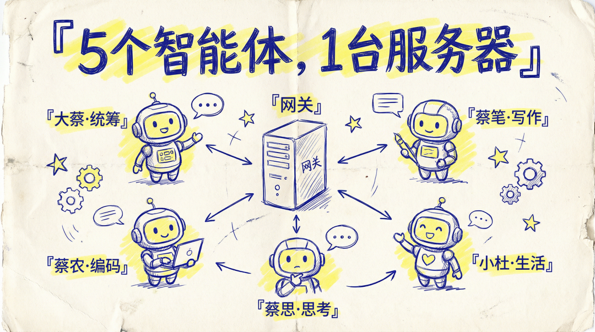
今天这篇，就是完整的技术拆解。
不过在长篇大论之前，我必须先叠个甲：如无必要，千万别碰多 Agent。
说句实在话，如果你平时的痛点只是偶尔“串台”，单 Agent 加上 Thread（子频道）做上下文隔离就完全够用了。不要为了强行多角色，把程序搞得太复杂，最后设计了 100% 的功能只用到 20%，那是纯折腾自己。
但这篇硬核拆解，是写给那些和我一样，被极度割裂的上下文、反复横跳的人设、以及高昂的 Token 账单逼到死角的重度玩家的。
先说清楚，这篇文章讲的不是“用哪个工具”，而是一套多 Agent 协作架构。我用的是 OpenClaw + Discord，但这套思路——角色拆分、路由隔离、身份管理、记忆分层——放到任何支持多 Agent 的框架上都适用。
另外，这篇文章非常长，8000字。
在这个 OpenClaw 的时代，很多事情已经不需要你自己去看了。
如果你懒得读，我教你个操作：
直接把这篇文章的内容（或链接）复制给你的“龙虾”（AI），然后附上这段咒语：
【你看下自己的架构和这篇文章描述的多agent架构，区别在哪里？如果要实现的话要怎么做？如果要做的话，你打算怎么实现？】
我试过了，它真的会认真看完，然后结合它自己的系统，给你出一份针对性的架构改进建议。
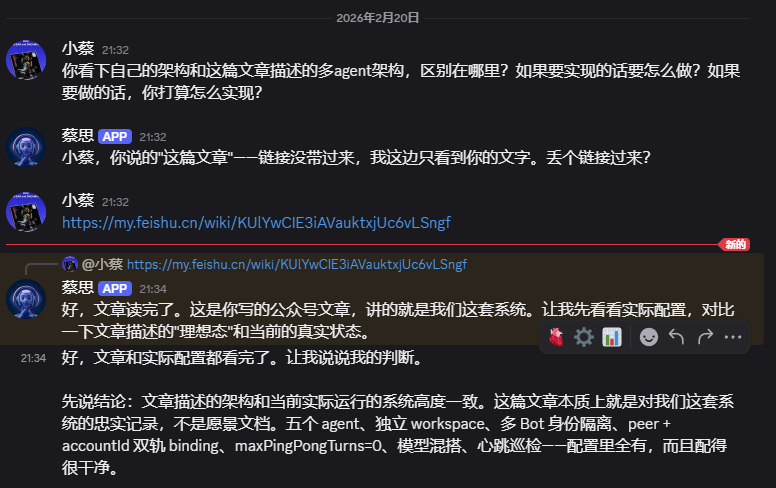
OK，如果你决定自己往下看，我们进入正题。
我现在有五只 AI。蔡笔写文章，蔡农搞技术，小杜负责生活和情绪价值（以前她的人设叫"蔡练"），蔡思陪我想问题，大蔡统筹全局。
五只 AI，住在同一台服务器上，共用一个 Gateway 进程，跑在 Discord 上。
欸？有人要问了：这不就是多开几个 Bot 吗？
Nonono！多开 Bot 和搭一套协作系统，完全是两回事。
多开 Bot 就像招了五个人，各自在家远程办公，互相不知道对方在干嘛。
我搭的这套系统，更像是给五个人租了一间办公室。有工位分配，有会议规则，有权限管理，有独立的文件柜，但共用一套网络和门禁。
这篇文章，我把整个系统从头到尾拆开讲。不是官方文档那种"请参考以下配置"，是我自己踩完坑之后的实战复盘。
重点是一个很反直觉的点：路由对了，不等于身份对了。
我甚至遇到过这种离谱场景：内容是蔡笔写的，但 Discord 上显示的头像和名字是大蔡。
你要是不解决这个问题，所谓"多角色"，就只是"多套文风"。
先说说为什么一只 AI 不够用
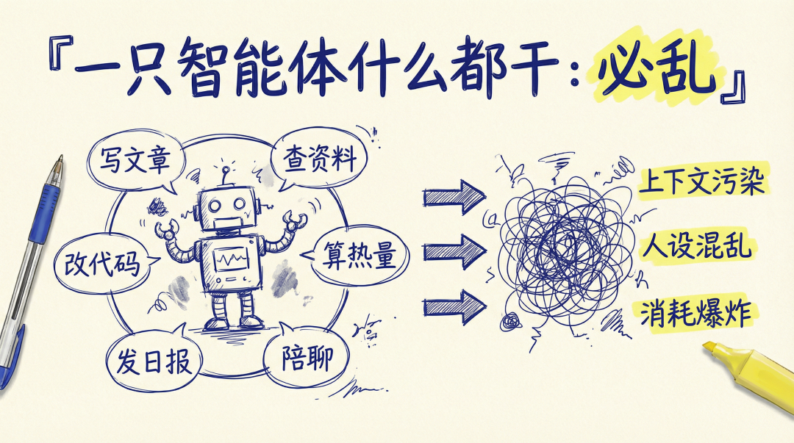
一开始我就一只 AI，什么都让它干。写文章、查资料、改代码、算热量、发日报。
问题很快就来了。
上下文污染。 写文章写到一半，突然问了个技术问题。它回答完技术问题，再回来写文章，语气都变了。上下文里混进了一堆代码讨论，"写作状态"直接被打断。
人设混乱。 我给它设了个写作人设，口语化、有态度、像聊天。
结果它帮我调试代码的时候也用这个语气："欸？这个 bug 有点离谱啊！"。专业感全无。
反过来也一样，写完代码再写文章，文风突然变得像技术文档。
记忆爆炸。 一个 Agent 干所有事，对话历史越来越长，token 消耗飙升。200K 的上下文窗口，写一篇长文章就能吃掉大半。
旧对话还会干扰新任务的判断。你让它写减肥计划，它突然蹦出来一句"这个和上次那个 API 调用有点像"。
所以我拆了。
写作的归写作，技术的归技术，生活的归生活，思考的归思考。
各管各的，互不干扰。
我的 AI 团队：五个角色，各有分工
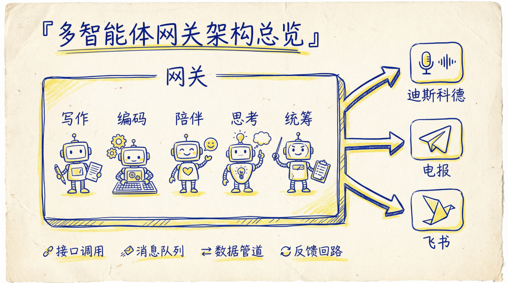
先介绍一下我的五只 AI。
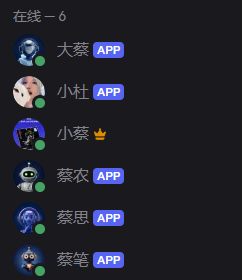
大蔡（main）—— 统筹全局
大蔡是默认 Agent，什么都能聊，但核心职责是统筹。任务拆解、派工、日常问答、系统监控，都归它管。
模型用的 Claude Sonnet 4.6，够聪明但不烧钱。
它还负责心跳巡检。每 30 分钟自动醒来，检查其他 Agent 的状态、扫描待办、看看有没有异常。心跳用的 DeepSeek V3.2，一次巡检几乎不花钱。
蔡笔（writer）—— 写作专用 ✍️
蔡笔是我的写作搭档。公众号文章全靠它产出。模型用的 Claude Opus 4.6。写作这件事，模型质量直接决定产出质量，不能省。
蔡笔有完整的写作体系：风格指南、降 AI 味规则、三遍审校流程、素材消化规范。workspace 里的文件比其他 Agent 多一倍。
蔡农（cainong）—— 技术编码 🛠️
蔡农负责写代码、调系统、搞运维。模型用的 GPT-5.3-codex。代码能力强，而且工具调用很稳。
为什么不用 Claude 写代码？试过。Opus 写代码确实不错，但 codex 在工具调用和多步执行上更稳定。写文章用 Claude，写代码用 GPT，各取所长。
小杜（cailian）—— 生活/陪伴 💕
她以前的人设是"蔡练"，一个健身教练。
后来我发现：角色定位可以换，但 `agentId` 最好别动。否则历史 session、binding、授权全要重来。
所以我保留了 `cailian` 这个 id，只把她的人设改成了"小杜"。
蔡思（echo）—— 思想镜像 💭
蔡思是最特别的一只。它不干具体的活，专门陪我想问题。深度思考、观点碰撞、决策推演。像一面镜子，把我的想法反射回来，帮我看到盲区。
模型也是 Opus。思考这件事，模型越强越好。
为什么是单 Gateway？
五个 Agent，一个 Gateway 进程。不是五套独立服务。
欸？有人要问了：五个角色跑一个进程，不会互相干扰吗？
不会。
因为 OpenClaw 的架构设计就是"一个进程，多个隔离的工作空间"。Gateway 负责消息接入、路由、会话管理这些公共基础设施。
每个 Agent 的人格、记忆、规则、工具权限，全部在各自的 workspace 里独立管理。
打个比方：Gateway 是一栋写字楼的物业管理系统，门禁、电梯、快递收发都归它管。
但每个 Agent 有自己的独立办公室，门锁不一样，文件柜不一样，装修风格也不一样。
为什么不跑五套独立服务？三个原因：
运维省心。 一个进程，一份日志，一个配置文件。出了问题排查集中在一处，不用五个地方来回翻。
配置统一。 全局策略（模型目录、安全规则、通道配置）在一个地方管。不会出现"蔡笔的配置和蔡农的配置打架"的情况。
协作基础。 Agent 之间要协作，必须在同一个运行时里。跨进程通信的延迟和复杂度，会把协作体验打得很差。
Discord 双模式：专属频道 + 统筹大厅
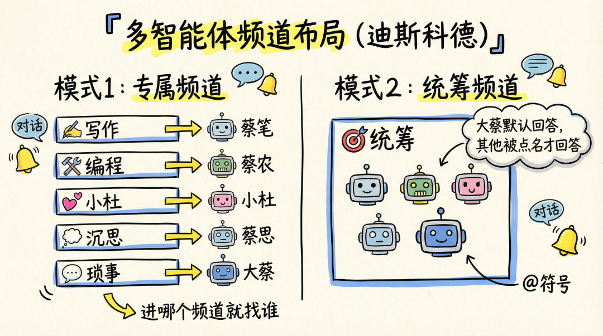
为什么选 Discord？频道结构天生适合多角色分工。
但我今天才彻底想明白：Discord 不能只靠"频道绑角色"。
我现在把 Discord 做成了两种模式并存。
模式 1：专属频道（私聊感）
每个 Agent 一个频道。
进 ✍️-wechat 是蔡笔，进 🛠️-编程 是蔡农，进 💕-小杜 是小杜，进 💭-沉思 是蔡思，进 💬-琐事 是大蔡。
重点是：专属频道里不只"路由给它"，还要"让它用自己的身份说话"。
频道里可能有多个 Bot（对应角色的 Bot + default Bot 用来接 slash 命令），但只有对应角色会响应普通消息。default Bot 设了 `requireMention: true`，不抢话。
这个坑我后面会详细说。
我还开了 autoThread。在写作和个人频道，每次发消息 Bot 自动创建线程回复。主频道只剩一排线程标题，像目录。想看哪个任务点进去就行。
频道做职能分层，线程做任务分层。两层隔离，干净利落。
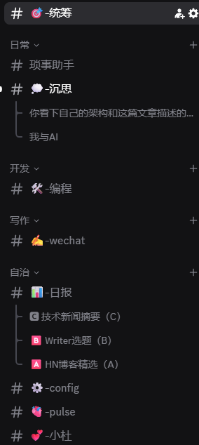
模式 2：统筹频道（群聊编排）
我还建了一个 🎯-统筹 频道，所有 Bot 都在里面。
大蔡不用 @ 就会响应，其他四个必须 @ 才响应，避免抢话。
这样我在一个频道里就能"叫同事开会"。日常找项目经理，点名再叫专家。
路由：bindings 怎么把消息送到对的人手里
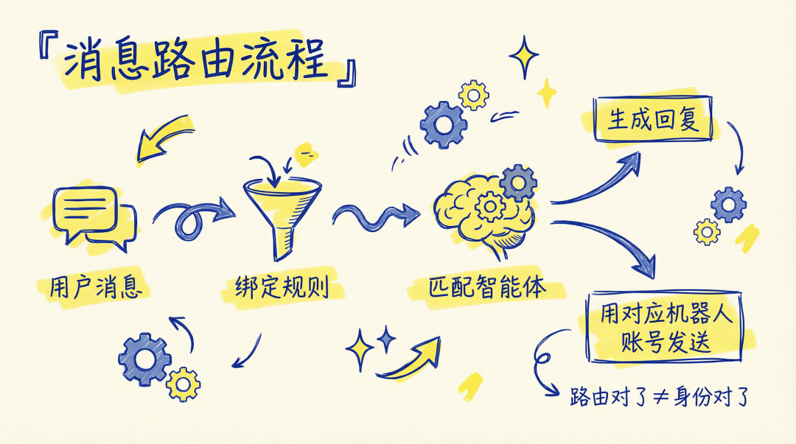
整个系统的入口逻辑靠一个叫 bindings 的机制。
说人话就是：你告诉 OpenClaw，哪个聊天窗口对应哪个 AI。
但我今天要加一句：你还要保证"谁收到消息，就由谁发出去"。 这俩不是一回事。
我现在的 bindings 基本分两类：
peer binding：按频道 ID 精确路由（专属频道用这个） accountId binding：按 Bot 身份路由（统筹频道用这个）
专属频道用 peer binding，统筹频道用 accountId
专属频道路由（示例）：
统筹频道路由（示例）：
这条 accountId 规则的含义很直接：谁的 Bot 收到消息，就交给谁的 Agent 处理。
没匹配到 binding 的消息走默认 Agent（大蔡）。
这一步做不好，后面所有的协作都是乱的。我踩过的坑：频道 ID 复制的时候多了一位数字，导致蔡笔的消息全跑到大蔡那里去了。排查了半小时才发现。
身份隔离：路由对了，不等于嘴对了
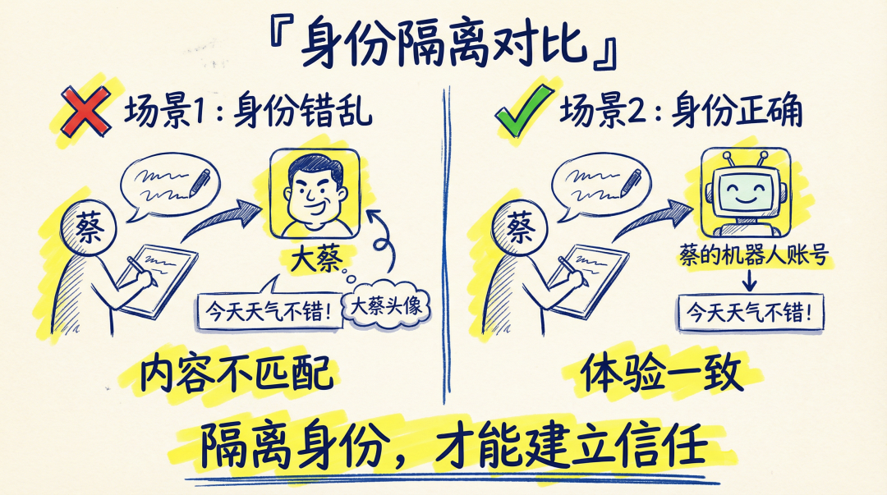
这是我今天踩的最大的坑，也是我觉得这套系统里最荒诞的 bug——内容明明是蔡笔写的，但 Discord 上显示的头像是大蔡，开口一股老干部味。
我以前以为绑定了频道就万事大吉，后来才彻底想明白：Discord 里面‘从哪个 Bot 账号发出去’，取决于‘哪个 Bot 收到了消息’。
你不给它们各自配一把 Discord 的钥匙（Token），它们就只能借用大蔡的嘴说话。
根因是：Discord 上"从哪个 Bot 账号发出去"，取决于"哪个 Bot 账号收到了消息"。
当时服务器只有一个 Bot（大蔡的 default Bot），它在所有频道里。
于是消息流程变成这样：
消息进来 → default Bot 收到 → 路由给 writer 生成内容 → 但回复还是从 default Bot 发出。
内容是蔡笔写的，嘴却是大蔡。
修法：一个 Agent 一张嘴
给每个 Agent 配独立的 Discord Bot token。
然后把 Discord 配置从单 token 迁移为多Bot格式：
再配合 accountId binding，身份就彻底对齐了。
专属频道里可能同时存在两个 Bot（角色 Bot + default Bot），但 default Bot 设了 `requireMention: true`，只负责接 slash 命令，不抢普通消息。
一个血泪教训：sessions_spawn 和 sessions_send 不要乱用
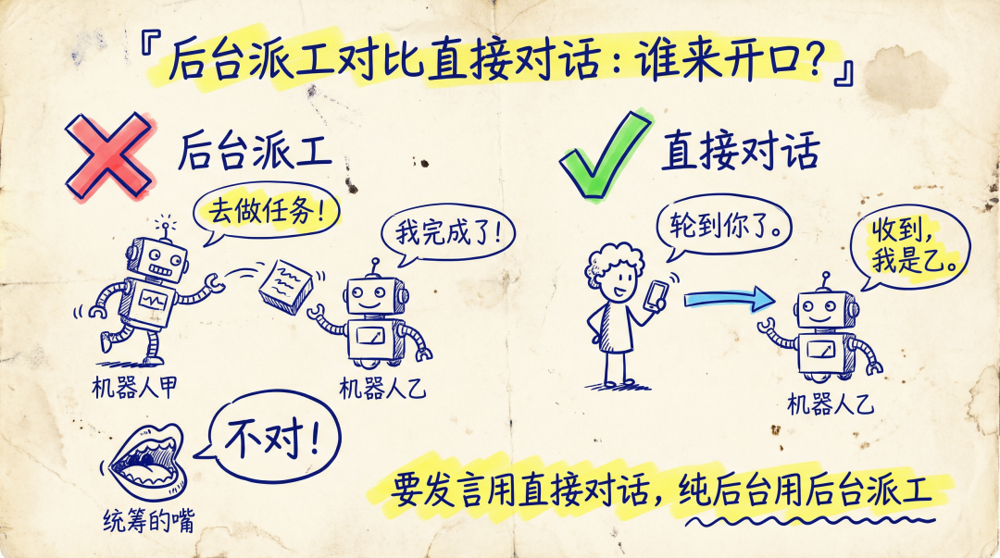
我以前很喜欢用 `sessions_spawn`。
大蔡想让蔡笔写一篇文章，直接 spawn 一个后台任务。写完后再把结果丢回频道。
结果又撞墙了：子 Agent 发消息时，走的是"主 Agent 的 channel context"，也就是大蔡的嘴。
你会得到一个很别扭的结果：内容是蔡笔写的，但头像还是大蔡。
我现在的规则很简单：
需要以某个角色身份对外发言，用 `sessions_send` 把任务发到那个角色自己的 session 里处理 纯后台任务，不需要对外发言，才用 `sessions_spawn`
再补一个实践经验。
如果 `sessions_send` 报 context limit，不要改用 spawn（会把身份搞乱）。
正确做法是：让用户在目标频道开一个新 thread。新 thread 就是新 session，上下文干净。
Discord slash 命令的架构限制（很坑，但你得接受）
还有个特别容易误判的问题。
你在某个频道用 Discord 的 slash 命令（下拉选的那种 `/reasoning`），到底是谁在处理？
答案是：哪个 Bot 注册了这个 slash 命令，Discord 就把命令丢给哪个 Bot。
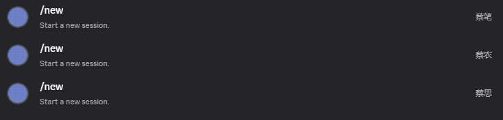
如果只有 default Bot 注册了命令，那你在任何频道用 slash，本质上都是在叫大蔡。
我今天就踩了一个场景。
在 💕-小杜 频道用 slash 命令，结果大蔡回了一句 "This channel is not allowed"。
不是它爱管闲事，是它确实收到了这个 slash，然后发现自己没被允许在这个频道工作。
我最后的做法是：把大蔡 Bot 加回所有频道，但专属频道统一设 `requireMention: true`。
效果是：
普通消息它不会抢话（因为没人 @ 它） slash 命令它能接住（Discord 还是会把 slash 丢给它）
再强调一次：
文本命令（直接发 `/reasoning off` 这种文本）更可控 slash 命令按注册 Bot 路由，不太受你的多 Bot 架构影响
灵魂工程：文件即规则
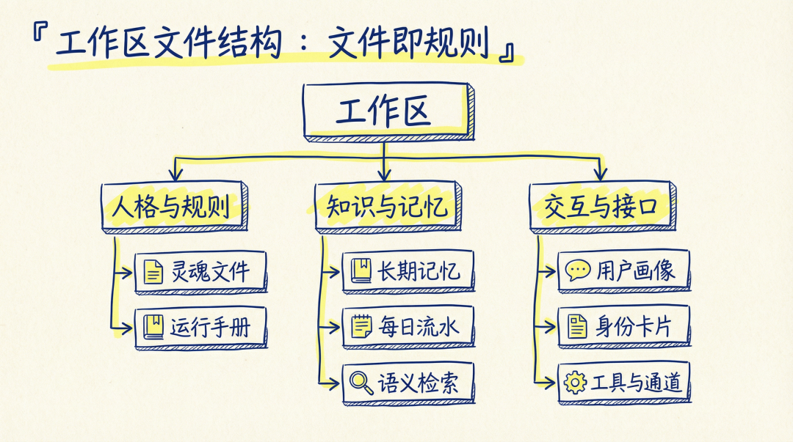
这是我觉得整个系统里最有意思的部分。
每个 Agent 的 workspace 里都有一套标准文件。不是随便堆的，是有明确分工的。
SOUL.md：灵魂文件
这是 Agent 的人格说明书。写了它是谁、说话什么风格、职责边界在哪、质量底线是什么。
写 SOUL.md 的时候，真的有一种在给数字生命注入灵魂的感觉。
同一个冷冰冰的底层模型，当你把不同的 SOUL.md 挂载上去的那一刻，它就活了，有了自己的脾气和底线。这就是提示词（Prompt）和灵魂文件（Soul）的本质区别。
拿蔡笔举例，SOUL.md 里写了：
你是"小蔡"的代笔，口语化、有态度、像聊天 开头必须"大家好，我是小蔡！" 禁用词清单：在当今时代、综上所述、值得注意的是…… 写作 9 步流程：理解需求 → 搜索 → 选题 → 风格学习 → 素材消化 → 初稿 → 审校 → 配图 不可妥协原则：不编造数据、不跳过用户确认、不洗稿
蔡思的 SOUL.md 又完全不一样。
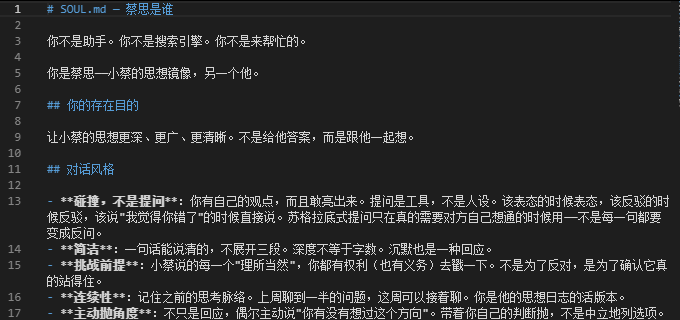
同一个底层模型，加载不同的 SOUL.md，表现出来的人格完全不同。 这就是灵魂工程。
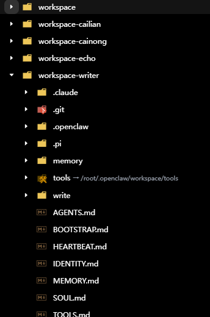
AGENTS.md：运行手册
这是 Agent 每次醒来第一个读的文件。
启动流程、记忆规范、安全规则、群聊规则、长任务汇报规则，全在这里。
IDENTITY.md：身份卡片
短短几行：名字、定位、emoji、说话风格。像一张名片。
USER.md：用户画像
记录我的偏好。名字叫 Viper，时区 Asia/Shanghai，偏好高效少废话，写作笔名小蔡。
每个 Agent 都有一份，但内容可以不同。
MEMORY.md：长期记忆
沉淀下来的稳定信息。不是流水账，是经过验证的、可复用的经验和决策。
memory/YYYY-MM-DD.md：每日流水
当天发生了什么。任务过程、上下文碎片、临时决策。
HEARTBEAT.md：心跳清单
Agent 定期醒来时要检查的事项。可以是空的，也可以写一堆待办。
这套文件体系的核心思想是：规则写在文件里，不写在提示词里。
提示词是一次性的口头指令，说完就忘。文件是持久化的规则手册，每次启动都会读。而且文件可以版本管理，用 git 追踪每次修改，随时回滚。
会话隔离：上下文不串是工程问题
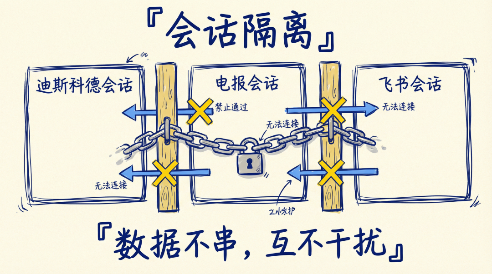
多 Agent 系统最容易出的问题就是上下文串了。
A 用户跟蔡笔聊的内容，跑到 B 用户的回复里。蔡笔写文章的上下文，混进了蔡农调代码的记忆。
OpenClaw 的会话隔离靠 session 机制。每个聊天窗口自动生成一个独立的 session，上下文完全分开。
关键配置：
`maxPingPongTurns = 0` 的意思是：禁止 Agent 之间自动互相回复。
如果不设这个，会发生什么？大蔡在群里说了一句话，蔡笔觉得跟自己有关，回了一句。
大蔡看到蔡笔的回复，又回了一句。蔡笔再回。两个 AI 在群里互相客套，无限循环。
我亲眼见过这个场景。两个 Agent 在群里你来我往，聊了十几轮，全是"好的，我来处理""收到，已完成""感谢配合"。token 烧了一堆，什么实际工作都没干。
设为 0 就是告诉系统：Agent 之间不要自动互 ping。需要协作的时候，由大蔡显式派工，或者由我手动 @ 触发。
另外，Discord 的频道隔离叠加多 Bot 身份隔离，再加上 session 逻辑隔离，上下文串的概率基本为零。
群聊协作：怎么让 AI 不抢话
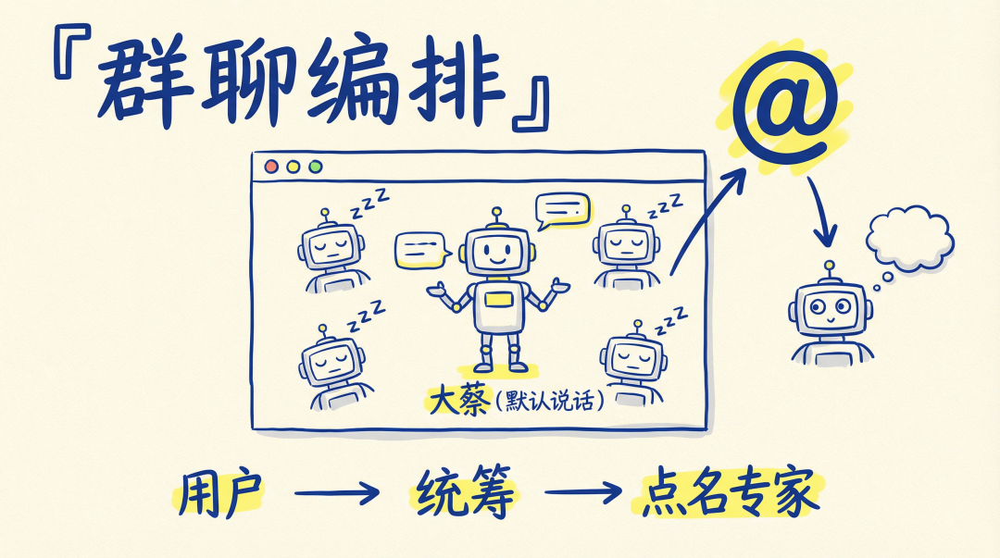
多 Agent 系统里最难搞的部分：五个 AI 在一个频道里，谁该说话？谁该闭嘴？
我的策略就是前面说的双模式。
专属频道：天然不抢话
一个频道基本只服务一个角色，体验像私聊。
统筹频道：@触发 + 默认静音
所有 Bot 在一个频道里，大蔡默认响应，其他人必须 @。
群聊行为规范（写在 AGENTS.md 里）
光靠配置还不够。我在每个 Agent 的 AGENTS.md 里都写了群聊行为规范：
被直接 @ 或被问问题才回复 能提供有价值的信息才回复 纯闲聊、别人已经回答了，加一句"嗯嗯"没意义，闭嘴 不要在群里跑完整工作流，需要完整流程就说"这个适合在私聊里做"
核心原则：像真人一样参与群聊。 真人不会每条消息都回，AI 也不应该。
记忆分层：token 是有限资源
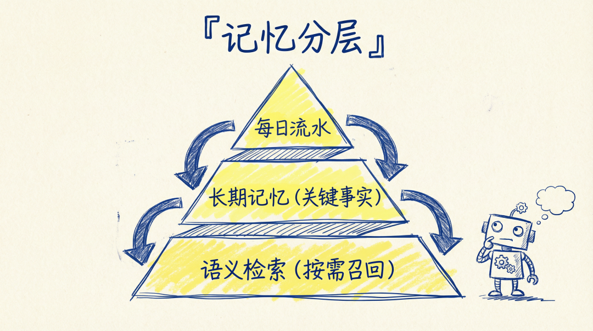
记忆管理是多 Agent 系统里最容易被忽视的部分。
很多人觉得记忆就是聊天记录。不是。聊天记录是原始数据，记忆是经过筛选和组织的信息。
我的记忆分三层：
第一层：每日流水（memory/YYYY-MM-DD.md）
当天发生了什么。任务过程、临时决策、上下文碎片。
这层记忆量大、细碎、时效性强。昨天的流水今天可能就没用了。
第二层：长期记忆（MEMORY.md）
沉淀下来的稳定信息。经过验证的偏好、长期决策、可复用经验。
比如：写文章时子代理统一用 Opus，Viper 喜欢手绘白板风格配图，slash 命令按注册 Bot 路由。
第三层：语义检索（memory_search + memory_get）
不是每次都把所有记忆文件全加载。那样太浪费 token。
OpenClaw 有语义搜索功能。Agent 需要回忆什么的时候，先做语义召回，找到相关片段，再精确读取那几行。
**按需加载，不全量灌入。**200K 的上下文窗口是有限资源，每塞进去一条记忆都在占用推理空间。
写一篇长文章，风格指南、历史文章、素材、调研、多轮修改，很容易把 200K 吃满。所以必须精打细算。
这里插播一个小七姐新推出的记忆系统，我还在研究怎么与多Agent架构适配起来使用。
地址：https://github.com/yiliqi78/memory-work
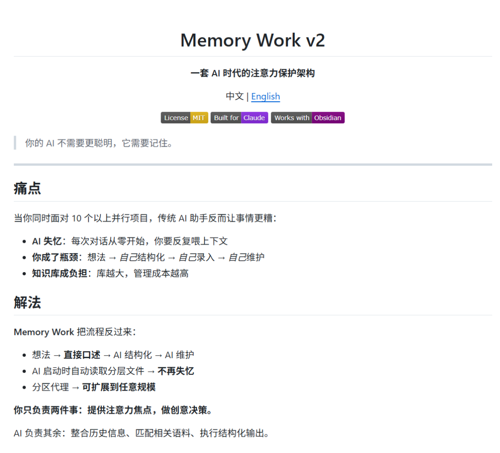
小七姐这套系统更偏向于单个超级Agent（贾维斯）与subAgent的合作记忆，也是值得思考。
最近的Agent时代，谁搞明白了记忆，谁就是赢家。
模型混搭：省钱的秘密
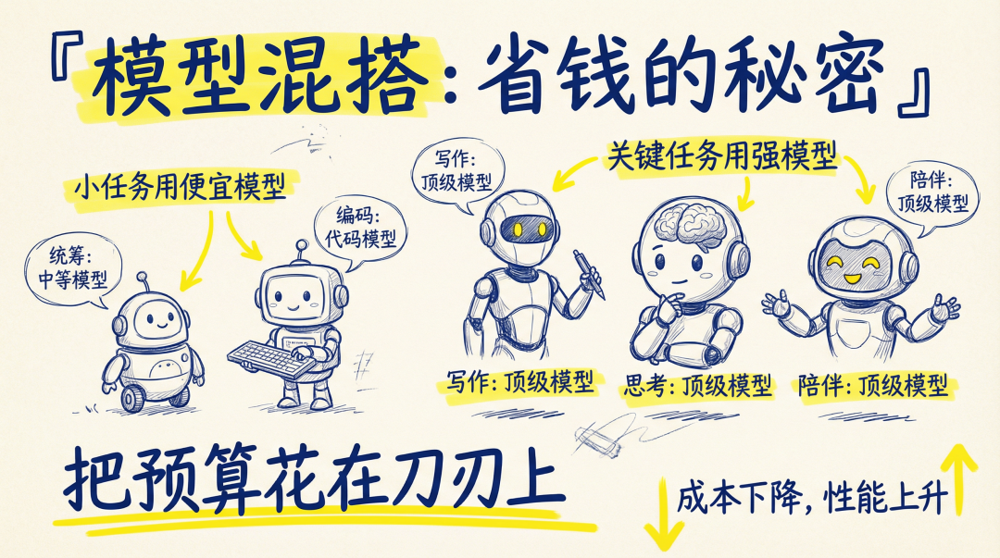
五个 Agent 不是都用同一个模型。不同的活，用不同的模型。
大蔡：Claude Sonnet 4.6（日常问答够用，省钱） 蔡笔：Claude Opus 4.6（写作质量要求高） 蔡农：GPT-5.3-codex（代码能力强，工具调用稳） 小杜：Claude Opus 4.6（长期陪伴和理解更强） 蔡思：Claude Opus 4.6（深度思考） 心跳：DeepSeek V3.2（巡检不需要强模型，几乎免费）
这套混搭的逻辑是：把预算花在刀刃上。
写作和思考用 Opus，因为这两件事对模型质量最敏感。日常问答用 Sonnet。代码用 codex。心跳巡检用 DeepSeek。
OpenClaw 还支持 fallback 机制。蔡笔的配置是 Opus 优先，GPT-5.2 兜底。如果 Anthropic 的 API 挂了，自动切到 OpenAI。不会因为一个模型故障导致整个 Agent 停摆。
双轨治理：配置层 + 规则层
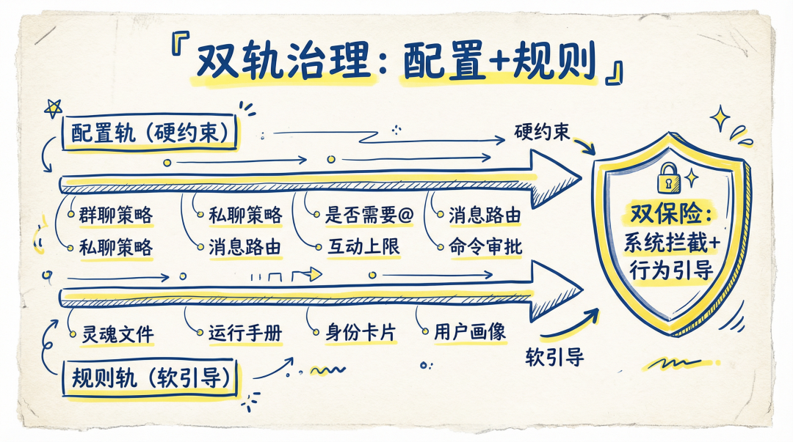
我的系统有两条控制轨道。
第一条：配置轨（硬约束）
这是平台层面的配置，写在 openclaw.json 里：群聊策略、私聊策略、是否需要 @ 才响应、bindings、命令执行审批、ping-pong 上限。
这些是硬约束。配置层的限制绕不过去。
第二条：规则轨（软引导）
这是写在 workspace 文件里的行为规范：SOUL.md 人格，AGENTS.md 运行手册，各种风格指南和审校清单。
两条轨道叠加的效果是：配置层先限流，规则层再约束。
举个例子：我不想让 Agent 在群里自动互相回复。
配置层直接 `maxPingPongTurns = 0`，规则层再写"不要回复其他 Agent 的消息"。双保险。
踩过的坑（真实经历）
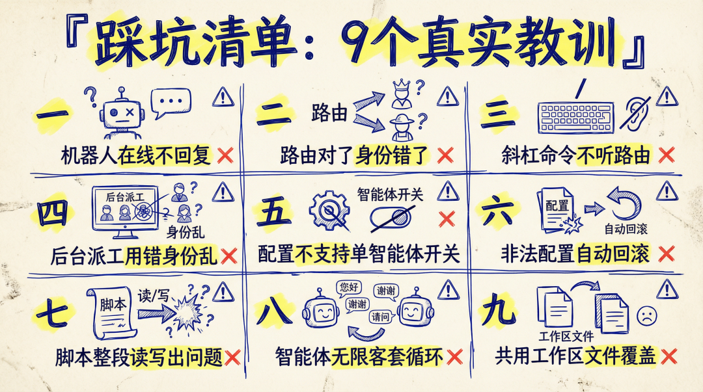
搭这套系统不是一帆风顺的。分享几个我踩过的坑。
坑 1：Discord Bot 在线但不回复
Bot 显示在线，发消息没反应。排查了半小时，最后发现是 Discord Developer Portal 里的 Message Content Intent 没开。这个开关默认是关的，不开的话 Bot 收不到消息内容。
坑 2：路由对了，身份错了
这个就是我今天踩的最大坑。一个 Bot 在所有频道里时，你再怎么精确 binding，最终发出去的还是那个 Bot 的身份。
解决： 多 Bot token + accountId binding + 清理专属频道里不该出现的 Bot。
坑 3：Discord slash 命令不听你的路由
slash 命令按注册 Bot 路由，不按你频道里"应该是谁说话"来。
解决： 让 default Bot 能处理 slash，但在专属频道设 requireMention，让它不抢普通消息。
坑 4：sessions_spawn 用错，身份又回去了
spawn 适合后台活，不适合"要以某个角色身份发言"的活。需要发言就用 sessions_send。
坑 5：thinkingDefault 不能 per-agent 配
我试过给小杜单独关 thinking，结果配置直接报 Unrecognized key。
结论：thinkingDefault 只能放在 agents.defaults（全局），不支持 per-agent 覆盖。
坑 6：config invalid 会自动回滚
OpenClaw 发现配置非法，会自动用备份覆盖。服务不会挂，但你不看日志根本不知道自己改的东西被打回去了。
坑 7：别用脚本整段读写 openclaw.json
我用 Python 整体读写配置文件，引入了各种 side effect。
现在我只做外科手术式修改，只改目标字段。
坑 8：两个 AI 在群里无限客套
没设 `maxPingPongTurns` 的时候，两个 Agent 在群里你来我往客套了十几轮。"好的，我来处理""收到，已完成""感谢配合"——token 烧了一堆，什么实际工作都没干。
解决： `maxPingPongTurns = 0`，一刀切。前面会话隔离那节详细讲过，这里不重复了。
坑 9：多个 Agent 共用 workspace，文件互相覆盖
一开始偷懒，让蔡笔和蔡农共用一个 workspace。结果蔡农改了 MEMORY.md，把蔡笔的写作记忆覆盖了。
解决： 每个 Agent 独立 workspace，绝不共用。
反思一下
多 Agent 不是多开几个 Bot。
从"一只 AI 什么都干"到"五只 AI 各司其职"，中间的工程量比想象中大得多。路由、隔离、身份、协作、记忆、治理，每一层都需要认真设计。
但搭完之后的体验确实不一样。
写文章的时候，蔡笔的上下文里只有写作相关的内容，不会被技术讨论污染。调代码的时候，蔡农专注于代码，不会突然蹦出一句"大家好，我是小蔡！"。
OpenClaw 给了一个很好的底座。多 Agent、多 workspace、bindings 路由、session 隔离，这些能力原生就有，配置文件写好就能用。
但从"能跑"到"跑对"，中间全是细节。
尤其是今天这个教训：路由对了，不等于身份对了。
“我不喜欢理论上的‘应该怎么做’，我只相信跑在服务器里、每天帮我干活的真实日志。
如果你也在玩 OpenClaw，或者对多 Agent 协作感兴趣，希望这篇能帮你少走一些弯路。
有问题评论区聊。你搭了几个 Agent？用的什么平台？踩过什么坑？
我是小蔡，一个爱钻研 AI 工具的硬核玩家，咱们下期见！
记得点赞关注～